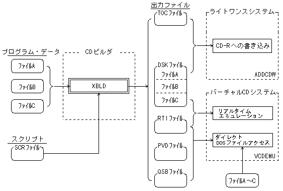

★PROGRAMMER'S GUIDE
★XBLDユーザーズマニュアル
★PROGRAMMER'S GUIDE
★XBLDユーザーズマニュアル
■ ｜
進む▼
XBLDユーザーズマニュアル
１．概 要
本書はCDビルダ「XBLD」の外部仕様を記述したものです。
1.1 XBLDについて
- CDビルダXBLDは、CD-Rディスクへの書き込みや、バーチャルCDシステムでのCDエミュレーションに必要なファイルを生成するためのツールです。
1.2 特徴
- （１） VCDBUILDに対して完全上位互換
- VCDBUILDと同じスクリプト文法を採用しているので、VCDBUILD用スクリプトファイルをそのまま使うことができます。
また、ディスクイメージファイル等もVCDBUILDと同じものを出力し、CD-Rディスクへの書き込みやCDエミュレーションを全く同じように行えます。
- （２） ビルド時間の短縮
- VCDBUILDと比較してディスクビルドにかかる作業時間を大幅に短縮。
- （３） 障害対応と機能改善・拡張
- VCDBUILDで見られた障害に対応しています。また、機能の改善・拡張を施しています。
- （４） ライトワンスシステムADDCDWとの連携
- ライトワンスシステム｢ADDCDW｣と連携して、オンザフライ書き込みが行えます。
オンザフライ書き込みはディスクイメージファイルを必要としないので、作業時間の短縮とハードディスク容量の節約ができます。
1.3 システムイメージ
図1.1 システムイメージ図

■ ｜
進む▼
★PROGRAMMER'S GUIDE
★XBLDユーザーズマニュアル
Copyright SEGA ENTERPRISES, LTD,. 1997